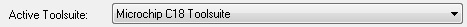

Vous n'êtes pas seuls dans l'Univers !

[
La programmation des PIC18F - Page 1
]
La programmation des PIC18F - Créer un projet sous MPLAB.
1) Téléchargements et installations
Afin de programmer un PIC, vous aurez besoin de deux programmes sur
votre PC. Un environnement de développement, c'est
à dire le logiciel dans lequel vous écrirez votre
programme, qui dispose entre autres d'un débogueur, et un
compilateur. Bien qu'on soit totalement libre d'en choisir d'autre,
MPLAB est l'environnement de développement
proposé par Microchip, constructeur des PICs, il y est donc
parfaitement adapté.
Après vous y être inscrit, vous pourrez en
télécharger gratuitement la dernière
version sur le site de Microchip :
Lancez l'installation, et suivez l'assistant jusqu'au bout. A la fin de
l'installation, l'assistant vous propose d'installer Hi-Tech C
Compiler. Il s'agit d'un compilateur pour les PIC10/12/16, installez-le
si vous avez l'intention de programmer des PICs de l'une de ces gammes.
Le compilateur, justement, c'est le programme qui fera la traduction du
programme que vous avez écrit en C en un langage
(assembleur) que le microcontrôleur saura
interpréter. Dans le cas de la programmation des PIC18,
Microchip propose un compilateur nommé C18. Microchip ne
propose pas de compilateur pour les PIC10/12/16 car ils sont
destinés à être programmé
directement en langage assembleur. Vous pourrez trouver une version
gratuite (lite) de C18 et une version d'évaluation
(limitée en temps) de la version complète sur le
site de Microchip :
 http://www.microchip.com/stellent/idcplg?IdcService=SS_GET_PAGE&nodeId=1406&dDocName=en010
http://www.microchip.com/stellent/idcplg?IdcService=SS_GET_PAGE&nodeId=1406&dDocName=en010
2) Configuration de MPLAB
Démarrez le « Project Wizard » à partir du menu « Project » et suivez-le. La première chose que vous devez renseigner est le composant que vous allez utiliser.
Ensuite, sélectionner le compilateur qui vous convient. Dans le cadre de ce cours, c'est C18 que nous allons utiliser.
{kind=link}
La prochaine étape est de choisir un répertoire pour votre projet. C'est dans ce répertoire que tous
les fichiers de votre projet seront contenus. Je vous recommande vivement de créer un répertoire
distinct pour chaque projet. De manière générale, évitez les caractères spéciaux ou accentués dans
les noms de fichiers et répertoires. Placez-vous dans le répertoire que vous avez choisis et trouvez un
nom au fichier de votre projet (*.mcp) qui vous permettra de le retrouver facilement. La dernière
étape est d'ajouter les fichiers déjà existants à votre projet. Cela peut être utile si vous utilisez des
bibliothèques de fonctions déjà écrites.
3) La création d'un projet
Démarrez le « Project Wizard »
à partir du menu « Project » et
suivez-le. La première chose que vous devez renseigner est
le composant que vous allez utiliser.
Ensuite, sélectionner le compilateur qui vous convient. Dans
le cadre de ce cours, c'est C18 que nous allons utiliser.
La prochaine étape est de choisir un répertoire
pour votre projet. C'est dans ce répertoire que tous
les fichiers de votre projet seront contenus. Je vous recommande
vivement de créer un répertoire
distinct pour chaque projet. De manière
générale, évitez les
caractères spéciaux ou accentués dans
les noms de fichiers et répertoires. Placez-vous dans le
répertoire que vous avez choisis et trouvez un
nom au fichier de votre projet (*.mcp) qui vous permettra de le
retrouver facilement. La dernière
étape est d'ajouter les fichiers déjà
existants à votre projet. Cela peut être utile si
vous utilisez des
bibliothèques de fonctions déjà
écrites.
4) Le fichier de programme principal
Il va falloir ajouter un premier fichier source à votre
projet. Ce fichier contiendra la fonction « main »,
fonction principale de tout programme en C. Allez dans le menu
« File » et cliquez sur « Add New File
to Project... », choisissez un nom pour votre fichier avec
une extension « *.c ». En
général, on nomme
son ficher « main.c » ou avec le même nom
que le projet, mais ce n'est pas une obligation.
Dans ce fichier principal, la première chose à
faire est d'inclure le fichier contenant les définitions des
registres de votre composant. Son nom est le nom du composant, en
enlevant les deux lettres « IC »,
avec l’extension « *.h ». Par exemple
pour le PIC18F4553, il faut inclure le fichier « p18F4553.h
».
Puis, il faut créer une fonction « main
» ne retournant rien et sans paramètre. Au final,
votre fichier
principal contient ces quelques lignes :
#include <p18f4553.h>
void main(void)
{
}
Il ne vous reste plus qu'à écrire votre programme.
5) La compilation et le débogage du composant
Dans un premier temps il vous faut choisir votre interface de programmation. Dans le menu
« Debugger », choisissez votre débogueur. Si vous n'en avez pas et souhaitez en acquérir un, je vous
conseille l'achat d'un Pickit 3, c'est un programmateur/débogueur relativement économique (45€)
qui permet de programmer la plupart des PICs et couvre amplement la majorité des besoins.
Configurez votre environnement en mode « Debug » à l'aide de la petite liste
déroulante en haut de la fenêtre de MPLAB.
Ensuite compilez votre programme en appuyant sur le bouton « Build All ».
Si tout va bien, vous devriez voir du texte défiler dans la fenêtre « Output », jusqu'à y voir inscrit
« BUILD SUCCEEDED ». Sinon, des messages d'erreur s'y inscriront en rouge, et généralement, il
faudra revoir votre code, vous avez fait des erreurs de programmation.
Programmez votre composant à l'aide du bouton « Program ». Une fois la
programmation effectuée, vous pouvez lancer votre programme en
appuyant sur le bouton « Play » vert, l'arrêter à votre guise avec le bouton « Pause », l'exécuter pas à pas, provoquer un « Reset », visualiser l'état des registres à tout instant. C'est très pratique pour vérifier le fonctionnement de votre programme, ou comprendre pourquoi il ne fonctionne pas lorsque c'est le cas.
{kind=link}
6) La programmation en mode production
Il existe un autre type de programmation, le mode production ou
« Release ». La différence avec le mode
débogueur est qu'en mode production, vous ne pouvez pas
utiliser les fonctions du débogueur. On utilise ce mode
lorsque l'on veut programmer le composant pour son
implémentation finale.
Pour accéder à ce mode, il suffit de configurer
l'environnement en mode « Release » dans la petite
liste déroulante en haut de la fenêtre de MPLAB.
Ensuite compilez votre programme et programmez votre composant de la
même manière qu'en mode débogage.
Commentaires (0)
Ajouter un commentaire